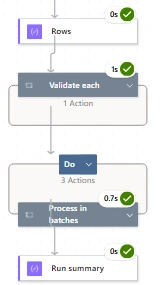
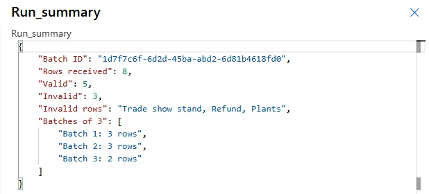

- Power Automate
- Level 8 · Real-world patterns · 7 of 8
Batch counters and run summaries
Processing many rows means some will be bad. A good flow keeps going, counts what happened, and ends with one clear summary instead of failing on the first problem.
Eight rows, three problems
WhatValidate each row, count valid/invalid, process in batches, then send one summary with a batch ID.
WhyOne bad row shouldn't stop the other seven, and someone needs to know which rows failed.
Demo8 rows: 5 valid, 3 invalid, processed in batches of 3.
The demo flow
Batch ID
guid(), counters Valid = 0, Invalid = 0Validate each (concurrency 1)
Row valid?
Yes
Valid + 1
No
Invalid + 1, append name to Problems
Process in batches (Do until) of 3
Run summary

Batches of 3
| Pass (iterationIndexes) | skip | Rows | |
|---|---|---|---|
| 0 | 0 | 1–3 | |
| 1 | 3 | 4–6 | |
| 2 | 6 | 7–8 |
take(skip(outputs('Rows'), mul(iterationIndexes('Process_in_batches'), 3)), 3)| Piece | What it does |
|---|---|
iterationIndexes(...) | The pass number: 0, 1, 2. |
mul(..., 3) | How many rows to skip. |
skip(rows, n) | Drop rows already done. |
take(..., 3) | The next 3. |

Counting safely
| Do | Why |
|---|---|
| Increment Valid / Invalid in each branch | Counts per outcome |
| Append failing row names to Problems | The summary can list them |
| Concurrency 1 on the loop | Shared counters and parallel loops don't mix |
If anything was invalid, also write it to an error list so it can be fixed and re-run.
New to this? Start from the basics optional
Batch ID: a guid() created once per run and stored with every record it touches.
Common mistakes
- Failing the whole run on one bad row.
- Counters in a parallel loop.
- A summary per row instead of one per run.